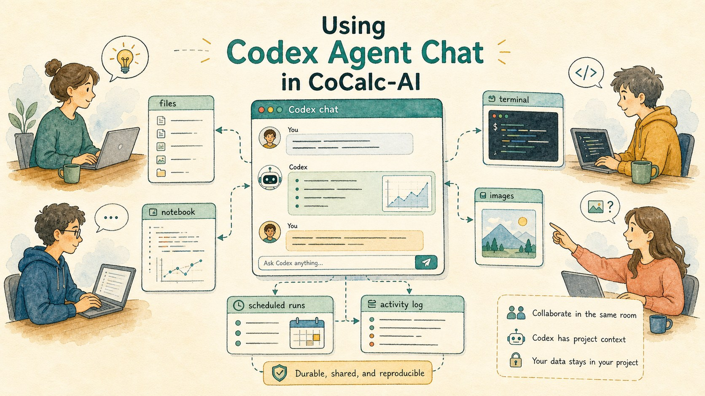
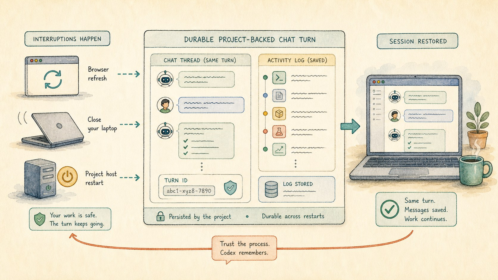
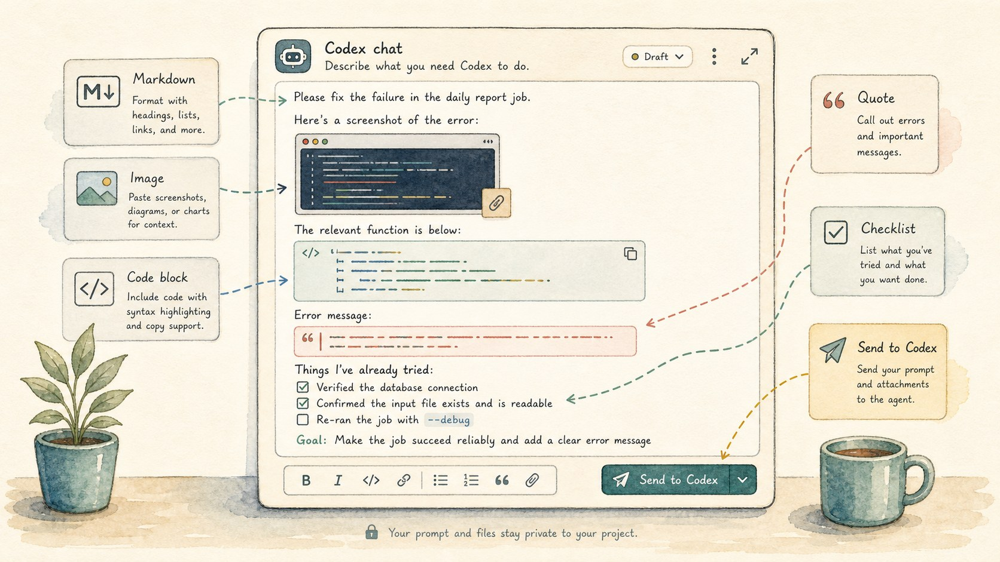
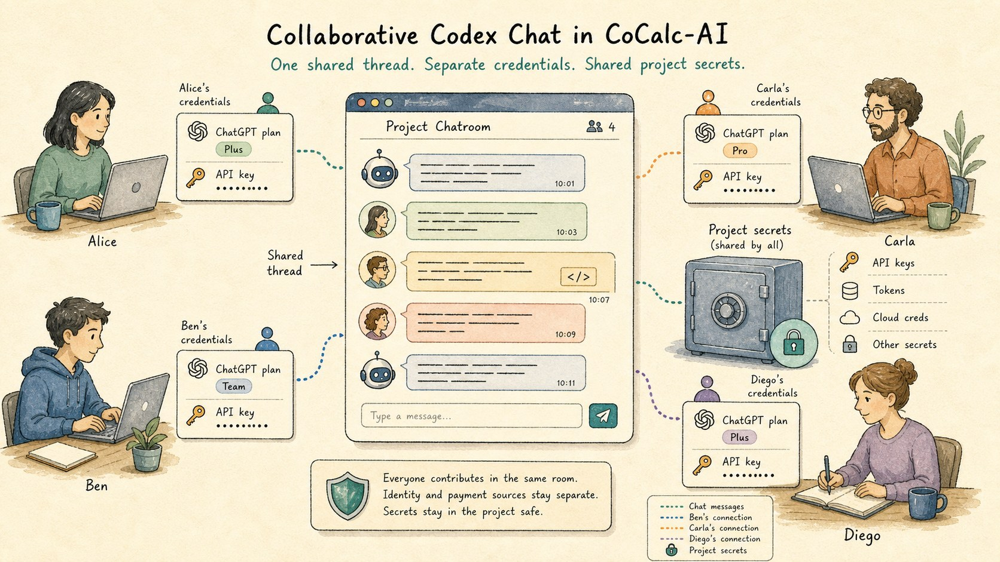
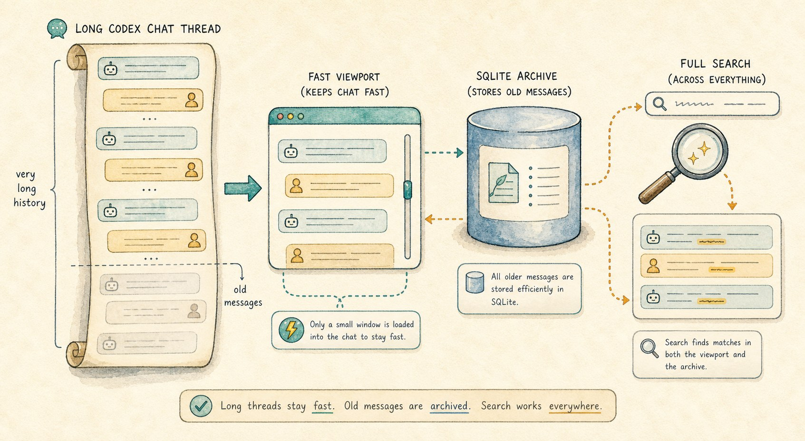
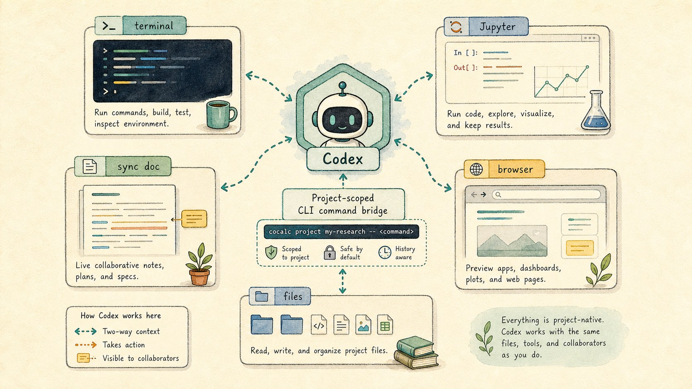

A CoCalc-AI field guide for project teams
Using Codex Agent Chat in CoCalc-AI
CoCalc's Codex chat is built for durable, collaborative project work: long threads, rich prompts, images, scheduled runs, search, and direct access to the same files, notebooks, and terminals your team is using.

Codex chat in CoCalc-AI is not trying to be every AI app. It is a project-native agent room. Its strength is that the conversation lives beside the work, survives ordinary interruptions, and can be shared by collaborators who are looking at the same project.
Use it when the task depends on project state: a codebase, a notebook, a paper draft, a terminal session, an image, a long computation, or a team conversation that should still make sense next week.
Durable by default
A Codex turn should not depend on one browser tab staying alive. Refresh the browser, close a laptop, reconnect later, or recover from a project-host restart: the chat rows, turn state, and activity trail are project data rather than disposable UI memory.
That changes how you work. You can ask for a careful refactor, a long build investigation, or a paper review without babysitting the page just to keep the turn alive.

Write the prompt you actually mean
The chat composer is a real editor. Use Markdown, code blocks, quotes, lists, links, and pasted images. For visual work, screenshots can be part of the prompt. For implementation work, include the failing command, the exact file path, and the output you care about.
This screenshot shows the toolbar wrapping incorrectly. Please inspect the frontend chat styles, fix the smallest cause, and run the focused frontend check.
Generated images also belong in the thread. When image generation is part of the work, outputs can appear in the chat instead of being hidden behind a separate tool window.

Work in the same room
CoCalc-AI chat is multi-user by design. A collaborator can read the same thread, watch the same terminal, inspect the same notebook, and understand why Codex changed a file. The thread is part of the project record, not a private aside.
Authentication can also match the collaboration model. A turn can use a user's ChatGPT plan or account API key, a project API key, a site key, or a shared project setup. That keeps ownership explicit instead of forcing every collaborator through one personal browser session.
Use Settings -> Environment -> Secrets for project credentials such as deploy keys. Secrets are the right place for shared project access; chat messages and project files are not.

Let long threads stay long
Some agent threads should be short. Others become lab notebooks: weeks of build failures, paper edits, search trails, screenshots, and decisions.
CoCalc's chat UI is built for that shape. It renders long threads with a virtualized message list, offloads old messages to a backend SQLite store, and keeps full text search useful across current and archived history.

Use scheduled Codex when the job has a rhythm
Run a daily command, test, notebook, or log inspection.
Ask Codex to report what changed and what still needs review.
Stop noisy automation after unacknowledged failures.
Keep the automation attached to the same chat context.
Give Codex project-native tools
CoCalc passes Codex project-scoped guidance for the CoCalc CLI and a built-in skill. That means Codex can work with live documents, notebooks, terminal sessions, and browser-visible project state through defined commands instead of guessing from stale files.
cocalc project terminal history <id>
cocalc project jupyter exec --path analysis.ipynb --stdin
cocalc project file ...
The practical effect is simple: when a notebook, terminal, or synced text document is the source of truth, Codex can be told to use that source of truth.

Know what this integration is for
CoCalc's Codex chat is strongest when durability, collaboration, project files, notebooks, terminals, images, and scheduled work matter. It is deliberately not a clone of every standalone Codex app interface.
Use the standalone app when its app-specific workflow is the point. Use CoCalc when the agent needs to live with the project.
It does a few things extremely well
- Durable turns that survive ordinary interruptions.
- Collaborative threads with project-owned context.
- Rich prompts with images, Markdown, code, and quotes.
- Long searchable histories that stay fast.
- Scheduled agent work attached to the same project.
Treat a Codex chatroom like a shared project notebook. It can hold the question, the evidence, the attempted fixes, the generated images, the terminal trail, the collaborator discussion, and the next scheduled check. That is the part CoCalc-AI makes unusual.